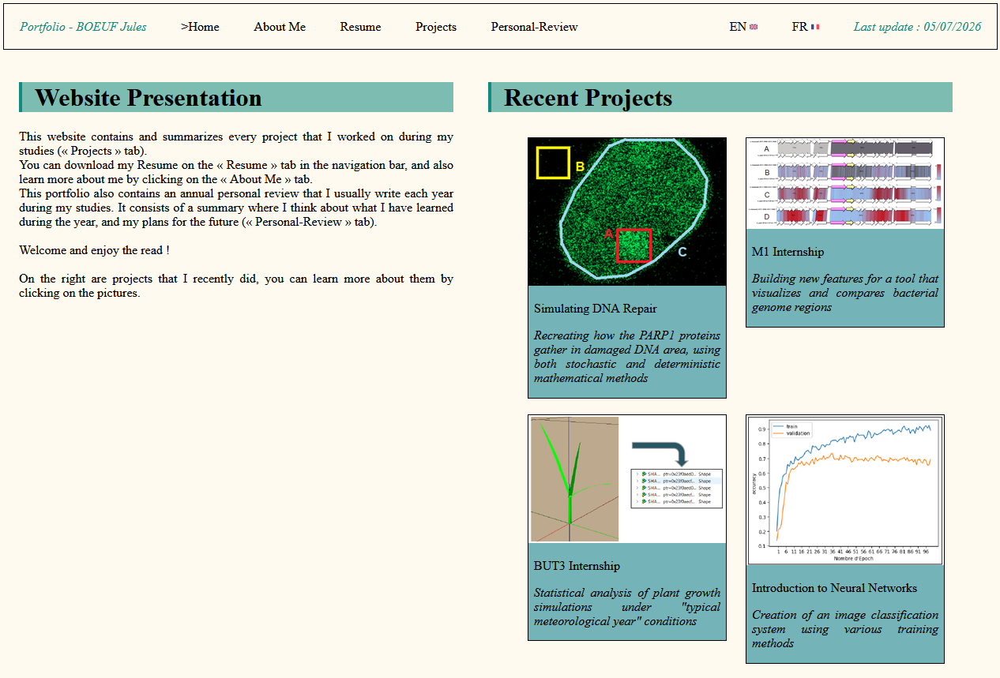
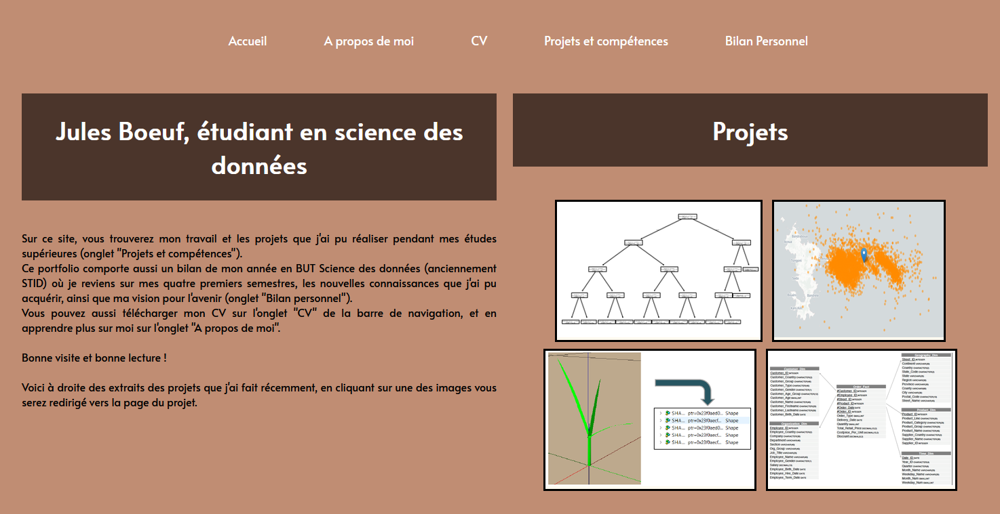
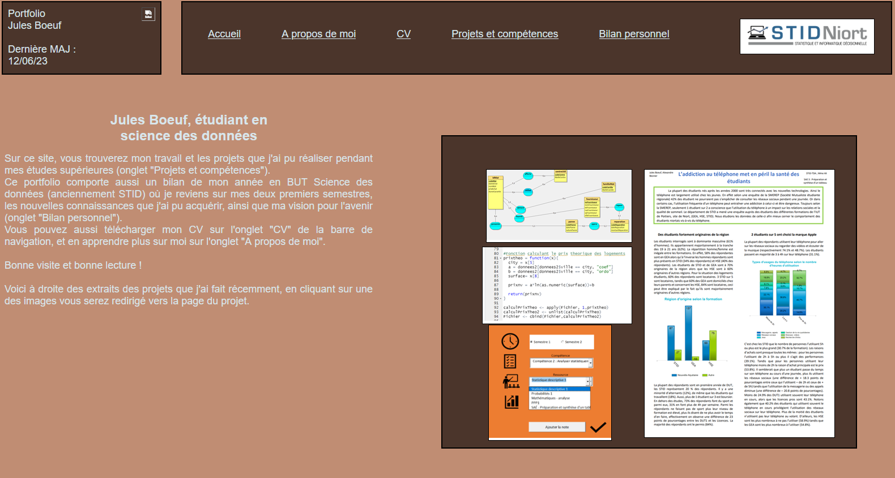

Portfolio (updated)
This website contains the projects and internships that I have done during my studies. You can also find other pieces of information here, such as my Resume and a page that introduces me. By building a portfolio myself, the goal was to produce a clear summary of my work, so I could keep a record of it and think about what I learned from it.
Since 2023, I have been updating my portfolio by adding work from past years and by trying to make it more accessible. This year, I chose to restart my portfolio and host it on GitHub Pages, so I can access it at any time, which was not possible before. With the new projects from late 2025 and early 2026 added, I also created an English version of this portfolio.
The site is entirely coded in HTML and CSS.
Skills learned:
- Maintaining a website
- Improving my coding skills in HTML and CSS
- Building a portfolio with records of my work
- Improving my writing skills
- Building a website that is easy to use and interactive
- Giving a clear summary of my work and reflecting on my work
Illustrations

Portfolio homepage in 2026

Portfolio homepage in 2024-25

Portfolio homepage in 2023